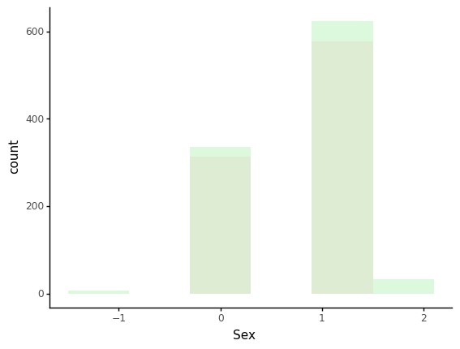
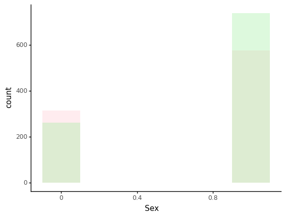
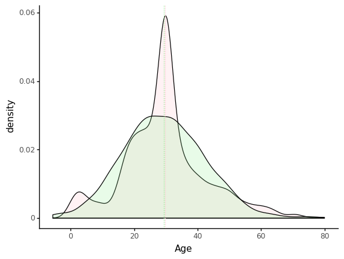
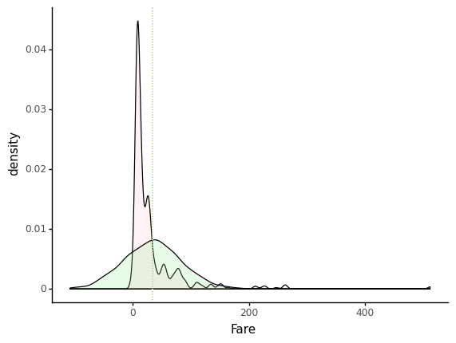
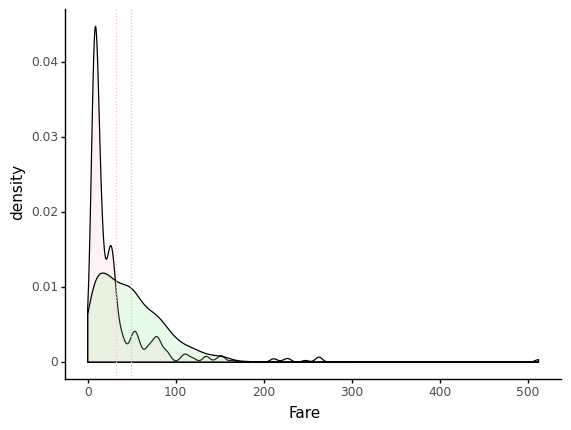

Synthetic data with SVD and Gaussian copulas
import pandas as pd
data = pd.read_csv("data/svm-hyperparameters-train-features.csv")
data.head()
| Pclass | Sex | Age | SibSp | Parch | Fare | |
|---|---|---|---|---|---|---|
| 0 | 3 | 1 | 22.0 | 1 | 0 | 7.2500 |
| 1 | 1 | 0 | 38.0 | 1 | 0 | 71.2833 |
| 2 | 3 | 0 | 26.0 | 0 | 0 | 7.9250 |
| 3 | 1 | 0 | 35.0 | 1 | 0 | 53.1000 |
| 4 | 3 | 1 | 35.0 | 0 | 0 | 8.0500 |
| Pclass | Sex | Age | SibSp | Parch | Fare | |
|---|---|---|---|---|---|---|
| count | 891.000000 | 891.000000 | 891.000000 | 891.000000 | 891.000000 | 891.000000 |
| mean | 2.308642 | 0.647587 | 29.758889 | 0.523008 | 0.381594 | 32.204208 |
| std | 0.836071 | 0.477990 | 13.002570 | 1.102743 | 0.806057 | 49.693429 |
| min | 1.000000 | 0.000000 | 0.420000 | 0.000000 | 0.000000 | 0.000000 |
| 25% | 2.000000 | 0.000000 | 22.000000 | 0.000000 | 0.000000 | 7.910400 |
| 50% | 3.000000 | 1.000000 | 30.000000 | 0.000000 | 0.000000 | 14.454200 |
| 75% | 3.000000 | 1.000000 | 35.000000 | 1.000000 | 0.000000 | 31.000000 |
| max | 3.000000 | 1.000000 | 80.000000 | 8.000000 | 6.000000 | 512.329200 |
model = GaussianCopula()
model.fit(data)
N_SAMPLES = 1000
new_df = model.sample(N_SAMPLES)
new_df.head()
| Pclass | Sex | Age | SibSp | Parch | Fare | |
|---|---|---|---|---|---|---|
| 0 | 1 | 1 | 35.675009 | 1 | 0 | 96.720466 |
| 1 | 3 | 1 | 17.487054 | 2 | 0 | -1.952414 |
| 2 | 3 | 1 | 30.713002 | 0 | -1 | -12.755545 |
| 3 | 1 | 1 | 17.839183 | 0 | 0 | 33.991250 |
| 4 | 2 | 1 | 27.495970 | 0 | 1 | 18.383220 |
| Pclass | Sex | Age | SibSp | Parch | Fare | |
|---|---|---|---|---|---|---|
| count | 1000.000000 | 1000.000000 | 1000.000000 | 1000.000000 | 1000.00000 | 1000.000000 |
| mean | 2.305000 | 0.684000 | 29.767560 | 0.540000 | 0.39300 | 32.009626 |
| std | 0.900436 | 0.546299 | 13.046890 | 1.146174 | 0.85632 | 51.155336 |
| min | 0.000000 | -1.000000 | -6.750841 | -3.000000 | -3.00000 | -121.529091 |
| 25% | 2.000000 | 0.000000 | 21.187223 | 0.000000 | 0.00000 | -1.856691 |
| 50% | 2.000000 | 1.000000 | 29.417820 | 1.000000 | 0.00000 | 34.272920 |
| 75% | 3.000000 | 1.000000 | 38.370910 | 1.000000 | 1.00000 | 65.550551 |
| max | 5.000000 | 2.000000 | 75.153474 | 4.000000 | 2.00000 | 173.463617 |
ggplot() + geom_histogram(data=data, mapping=aes(x='Pclass'), fill=colours[0], bins=3, alpha=0.3) + \ geom_histogram(data=new_df, mapping=aes(x='Pclass'), fill=colours[1], bins=3, alpha=0.3) + \ theme_classic()

```python
ggplot() + geom_histogram(data=data, mapping=aes(x='Sex'), fill=colours[0], bins=6, alpha=0.3) + \
geom_histogram(data=new_df, mapping=aes(x='Sex'), fill=colours[1], bins=6, alpha=0.3) + \
theme_classic()

ggplot(mapping=aes(x='Age')) + \
geom_density(data=data, fill=colours[0], alpha=0.2) + \
geom_density(data=new_df, fill=colours[1], alpha=0.2) + \
geom_vline(xintercept=data.Age.mean(), linetype='dotted', colour=colours[0]) + \
geom_vline(xintercept=new_df.Age.mean(), linetype='dotted', colour=colours[1]) + \
theme_classic()

ggplot(mapping=aes(x='Fare')) + \
geom_density(data=data, fill=colours[0], alpha=0.2) + \
geom_density(data=new_df, fill=colours[1], alpha=0.2) + \
geom_vline(xintercept=data.Fare.mean(), linetype='dotted', colour=colours[0]) + \
geom_vline(xintercept=new_df.Fare.mean(), linetype='dotted', colour=colours[1]) + \
theme_classic()

model = GaussianCopula(
field_transformers={
'Pclass': 'categorical',
'Sex': 'categorical',
'Age': 'float',
'SibSp': 'boolean',
'Parch': 'integer',
'Fare': 'float'
}
)
model.fit(data)
new_df = model.sample(N_SAMPLES)
new_df.head()
| Pclass | Sex | Age | SibSp | Parch | Fare | |
|---|---|---|---|---|---|---|
| 0 | 2 | 0 | 33.619 | 1 | 0 | 14.222 |
| 1 | 1 | 1 | 26.475 | 1 | -1 | 76.520 |
| 2 | 3 | 1 | 55.414 | 1 | 2 | -16.914 |
| 3 | 2 | 0 | 11.142 | 1 | 2 | 139.183 |
| 4 | 3 | 1 | 33.211 | 0 | 0 | -34.416 |

ggplot() + geom_histogram(data=data, mapping=aes(x='Sex'), fill=colours[0], bins=6, alpha=0.3) + \
geom_histogram(data=new_df, mapping=aes(x='Sex'), fill=colours[1], bins=6, alpha=0.3) + \
theme_classic()

ggplot(mapping=aes(x='Age')) + \
geom_density(data=data, fill=colours[0], alpha=0.2) + \
geom_density(data=new_df, fill=colours[1], alpha=0.2) + \
geom_vline(xintercept=data.Age.mean(), linetype='dotted', colour=colours[0]) + \
geom_vline(xintercept=new_df.Age.mean(), linetype='dotted', colour=colours[1]) + \
theme_classic()

ggplot(mapping=aes(x='Fare')) + \
geom_density(data=data, fill=colours[0], alpha=0.2) + \
geom_density(data=new_df, fill=colours[1], alpha=0.2) + \
geom_vline(xintercept=data.Fare.mean(), linetype='dotted', colour=colours[0]) + \
geom_vline(xintercept=new_df.Fare.mean(), linetype='dotted', colour=colours[1]) + \
theme_classic()

data.Fare.describe()
distributions = model.get_distributions()
distributions
model = GaussianCopula(
field_transformers={
'Pclass': 'categorical',
'Sex': 'categorical',
'Age': 'float',
'SibSp': 'boolean',
'Parch': 'integer',
'Fare': 'float'
},
field_distributions={
'Fare': 'truncated_gaussian'
}
)
model.fit(data)
new_df = model.sample(N_SAMPLES)
new_df.Fare.describe()
ggplot(mapping=aes(x='Fare')) + \
geom_density(data=data, fill=colours[0], alpha=0.2) + \
geom_density(data=new_df, fill=colours[1], alpha=0.2) + \
geom_vline(xintercept=data.Fare.mean(), linetype='dotted', colour=colours[0]) + \
geom_vline(xintercept=new_df.Fare.mean(), linetype='dotted', colour=colours[1]) + \
theme_classic()
